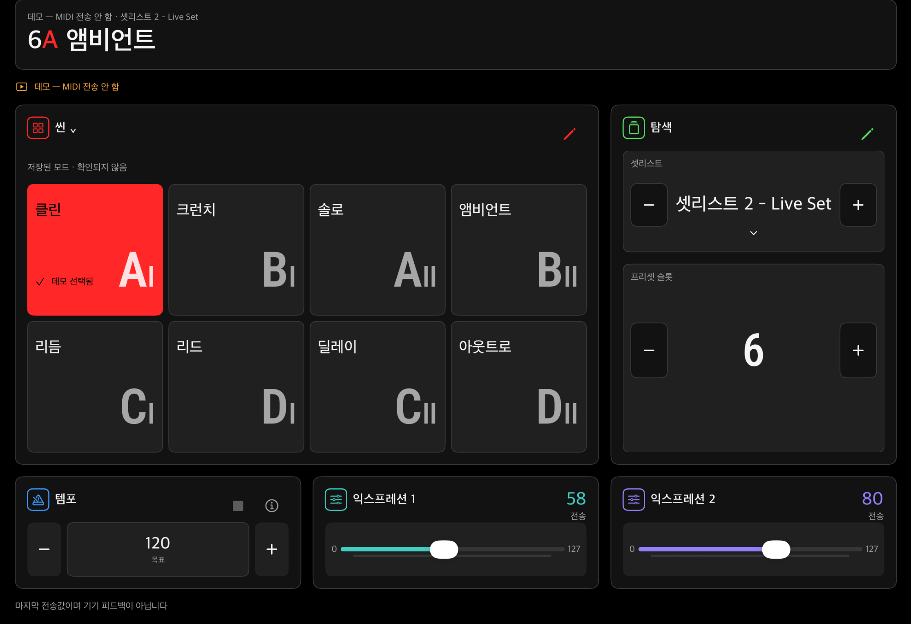
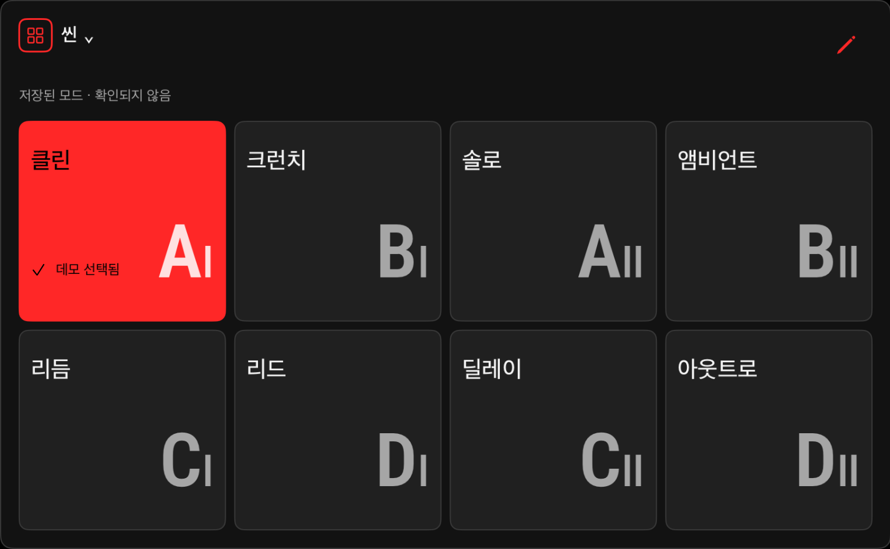
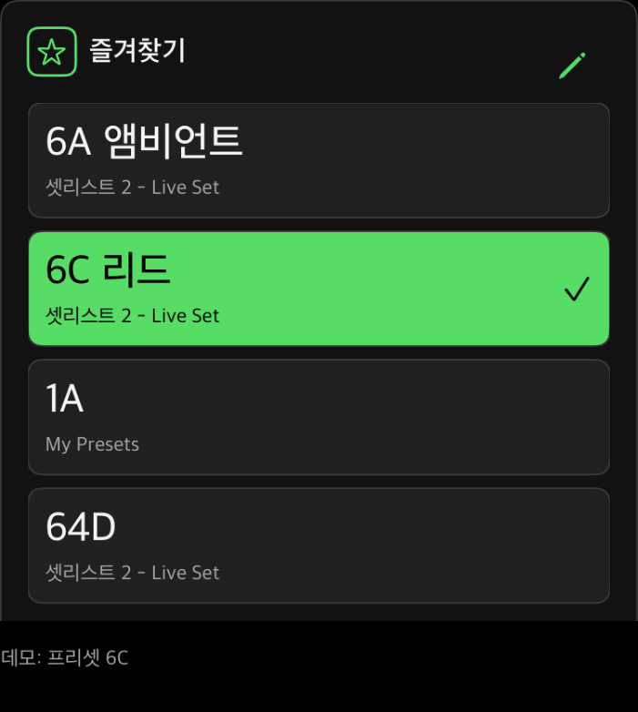
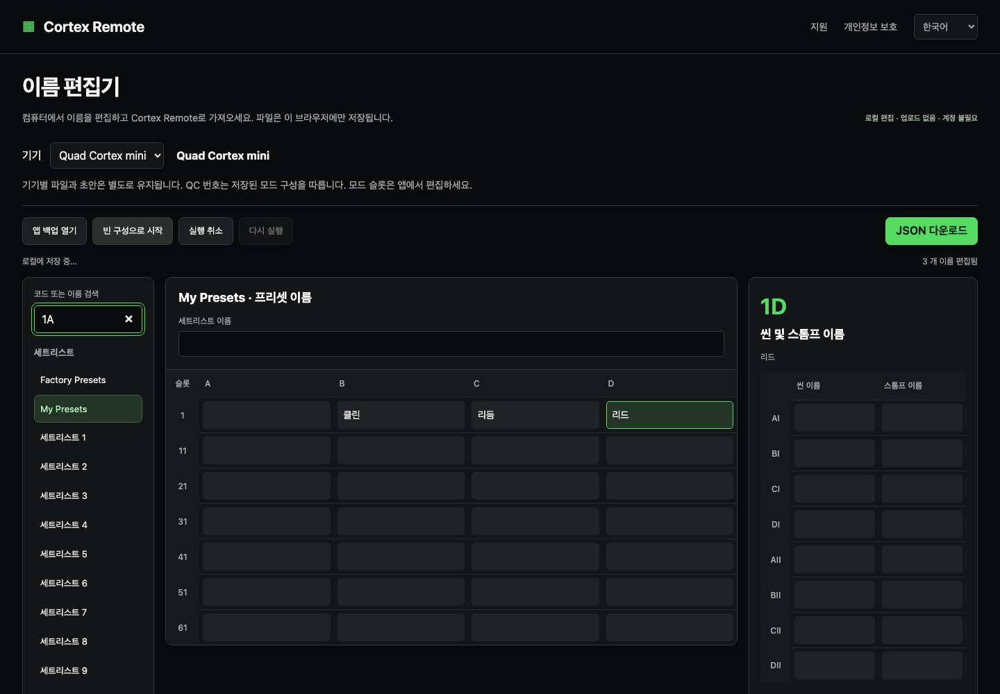

{kind=link}
필요한 컨트롤을, 원하는 자리에.
패널을 드래그해 배치하고 사용하지 않는 기능은 숨기세요. 자주 쓰는 컨트롤을 손이 닿기 편한 곳에 둘 수 있습니다.
현재 베타 테스트 중
프리셋, 씬, 템포와 익스프레션을 iPad에서 조작하세요. 연주 방식에 맞게 화면을 배치하고, 자주 쓰는 기능을 가까이 두세요.
iPad용 · Quad Cortex mini · iPadOS 26 이상


세트리스트와 프리셋을 이동하고, 씬과 스톰프를 터치로 조작하세요. 알아보기 쉬운 이름을 붙여 필요한 사운드를 빠르게 찾을 수 있습니다.
패널을 드래그해 배치하고 사용하지 않는 기능은 숨기세요. 자주 쓰는 컨트롤을 손이 닿기 편한 곳에 둘 수 있습니다.
여러 세트리스트의 프리셋을 한곳에 모아 한 번의 탭으로 불러오세요.

직접 탭하거나 목표 템포를 입력하고, 설정된 MIDI 클록을 받아 확인하세요.
익숙한 슬라이더로 두 개의 익스프레션 값을 조절하세요.
편집과 패널 배치를 잠그고, 연주에 필요한 버튼과 슬라이더는 계속 사용하세요.
튜너, Gig View와 모드 컨트롤도 함께.

컴퓨터에서 프리셋, 씬과 스톰프 이름을 정리하세요. 스프레드시트 내용을 붙여 넣고, 작업을 브라우저에 저장한 뒤 업데이트된 앱에서 사용할 JSON 파일을 내려받을 수 있습니다.
이름 편집기 열기mini에 별도로 전원을 공급하고, 지원되는 MIDI 데이터 연결 방식으로 iPad와 연결하세요.
MIDI 출력과 일치하는 채널을 선택하세요. 피드백을 사용할 때는 입력을 선택하고 기기의 MIDI Out도 설정하세요.
이름을 붙이고, 패널을 배치하고, 즐겨찾기를 추가하세요.
기기가 없어도 Demo로 둘러볼 수 있어요.
연결 가이드 읽기매주 교회에서 반주하며 다양한 곡과 프리셋을 오갑니다. 악보를 보는 iPad는 늘 곁에 있었고요. Cortex Remote는 이미 사용하던 그 화면으로 mini를 더 편하게 조작하고 싶다는 생각에서 시작했습니다.
iPadOS 26.0 이상이 설치된 iPad와 별도로 전원을 공급한 Quad Cortex mini가 필요합니다. USB-C 데이터 케이블 등 호환되는 데이터 연결을 사용하고, iPad에 필요한 어댑터를 준비하세요. 앱에서 MIDI 출력을 선택하고 기기의 입력 채널과 맞춰야 합니다.
네. Demo에서는 하드웨어로 MIDI를 전송하지 않고 인터페이스를 살펴볼 수 있습니다. 이 페이지의 앱 스크린샷도 Demo로 촬영했습니다.
아니요. 이 앱은 톤 편집기가 아닌 연주용 컨트롤러입니다. 프리셋, 씬과 스톰프 이름은 앱에 직접 입력하는 로컬 표시용 이름이며 mini에서 내려받지 않습니다.
자동으로 모두 따라오지는 않습니다. 템포를 받으려면 기기의 MIDI Clock Out을 켜고 앱에서 입력을 선택해야 합니다. 프리셋, 씬과 익스프레션 피드백은 mini에 일치하는 MIDI Out 할당이 필요합니다. 설정되지 않은 변경은 알 수 없으며, 명령 전송은 기기의 확인 응답을 뜻하지 않습니다.
목표 템포를 입력하거나 템포 −/+ 버튼을 누르면 시간 간격을 둔 탭 명령 4회를 한 번 전송합니다. BPM 숫자를 기기에 직접 쓰는 방식은 아닙니다. 목표값, 로컬 추정값과 수신 클록은 구분해서 표시됩니다. 튜너 열기·닫기는 기기의 화면을 조작하며, 앱에서 음정을 표시하지 않습니다.
아니요. 편집, 패널 배치, 이동 스와이프와 숫자 편집기를 막습니다. 프리셋, 씬, 스톰프, 템포와 익스프레션 등 연주 조작은 계속 사용할 수 있습니다. 탭하면 잠기고, 1초간 길게 누르면 잠금이 해제됩니다.
편집기는 공개되어 있지만 현재 다운로드 파일과 이름만 가져오기는 업데이트된 앱이 필요합니다. 최초 승인된 베타에서는 이 작업 흐름을 지원하지 않습니다. 백업을 보관하고 해당 호환성을 명시한 앱 빌드를 기다려 주세요.
A–H와 Hybrid 표시를 제공하는 별도의 오리지널 Quad Cortex 프로필을 개발 중입니다. 현재는 Demo 전용이며, 실기기 검증 전까지 오리지널 QC의 실제 MIDI 전송은 비활성화되어 있습니다. 이 페이지의 주요 앱 기능은 Quad Cortex mini를 기준으로 설명합니다.
직접 내보내거나 공유하지 않는 한 앱 설정과 이름은 iPad에 보관됩니다. 앱 계정, 광고나 개발자가 운영하는 분석 기능은 없습니다. 이름 편집기는 브라우저에서 파일을 처리하고 로컬 초안을 저장하므로 공용 컴퓨터에서는 초안을 지워 주세요.
Cortex Remote는 현재 TestFlight 베타 테스트 중입니다. 참여는 jk8tge@iotalab.biz로 IOTA Lab에 문의해 주세요. TestFlight는 Apple의 베타 앱 설치용 앱입니다. 이 페이지에는 정식 App Store 다운로드 링크가 없습니다.
{kind=link}
{kind=link}
{kind=link}
{kind=link}
{kind=link}
{kind=link}